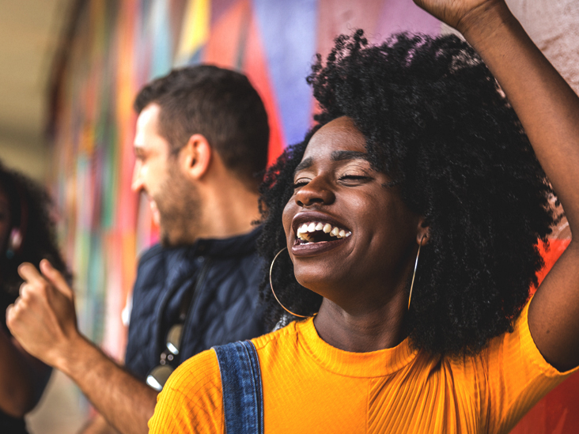
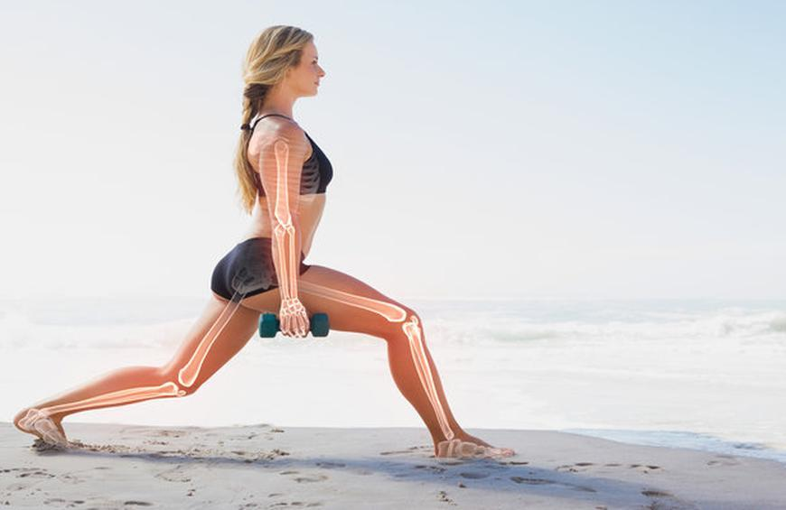
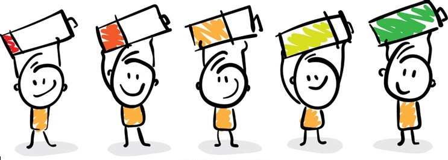
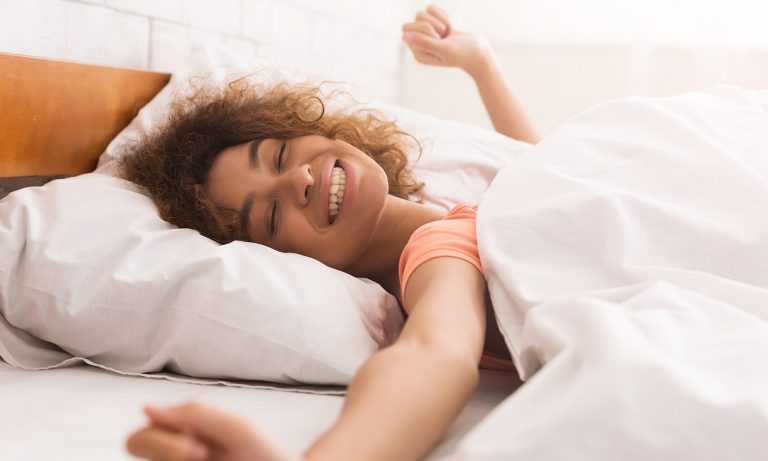

A healthy lifestyle can help you thrive throughout your life.
Making healthy choices isn't always easy. It can be
hard to find the time and energy to exercise regularly or
prepare healthy meals. However, your efforts will pay off
in many ways, and for the rest of your life.
Benefits of Exercises on General Health
We have all heard it many times before - regular exercise is good for you, and it can help you lose weight.
But if you are like many Americans, you are busy, you have a sedentary job, and you haven't yet changed your
exercise habits. The good news is that it's never too late to start. You can start slowly, and find ways to fit
more physical activity into your life. To get the most benefit, you should try to get the recommended amount
of exercise for your age. If you can do it, the payoff is that you will feel better, help prevent or control
many diseases, and likely even live longer.

Exercise has been shown to improve your mood and decrease feelings of depression, anxiety, and stress.
It produces changes in the parts of the brain that regulate stress and anxiety. It can also increase brain
sensitivity for the hormones serotonin and norepinephrine, which relieve feelings of depression.
Additionally, exercise can increase the production of endorphins, which are known to help produce positive
feelings and reduce the perception of pain.
Furthermore, exercise has been shown to reduce stress and improve symptoms of anxiety. Interestingly, it doesn’t matter how intense your workout is. It seems that your mood can benefit from exercise no matter the intensity of the physical activity. In fact, a study in 24 women who had been diagnosed with depression showed hat exercise of any intensity significantly decreased feelings of depression.The effects of exercise on mood are so powerful that choosing to exercise (or not) even makes a difference over short periods. One review of 19 studies found that active people who stopped exercising regularly experienced significant increases in symptoms of depression and anxiety, even after only a few weeks.
Furthermore, exercise has been shown to reduce stress and improve symptoms of anxiety. Interestingly, it doesn’t matter how intense your workout is. It seems that your mood can benefit from exercise no matter the intensity of the physical activity. In fact, a study in 24 women who had been diagnosed with depression showed hat exercise of any intensity significantly decreased feelings of depression.The effects of exercise on mood are so powerful that choosing to exercise (or not) even makes a difference over short periods. One review of 19 studies found that active people who stopped exercising regularly experienced significant increases in symptoms of depression and anxiety, even after only a few weeks.
 Some studies have shown that inactivity is a major factor in weight gain and obesity. To understand the effect
of exercise on weight reduction, it is important to understand the relationship between exercise and energy
expenditure.
Some studies have shown that inactivity is a major factor in weight gain and obesity. To understand the effect
of exercise on weight reduction, it is important to understand the relationship between exercise and energy
expenditure.
Your body spends energy in three ways:
- digesting food
- exercising
- maintaining body functions like your heartbeat and breathing

Exercise plays a vital role in building and maintaining strong muscles and bones. Activities like
weightlifting can stimulate muscle building when paired with adequate protein intake. This is because
exercise helps release hormones that promote the ability of your muscles to absorb amino acids.
This helps them grow and reduces their breakdown. As people age, they tend to lose muscle mass and
function, which can lead to an increased risk of injury. Practicing regular physical activity is
essential to reducing muscle loss and maintaining strength as you age.
Also, exercise helps build bone density when you’re younger, in addition to helping prevent osteoporosis later in life. Interestingly, some research suggests that high impact exercise, such as gymnastics or running, or odd impact sports, such as soccer and basketball, may help promote a higher bone density than non-impact sports like swimming and cycling.
Also, exercise helps build bone density when you’re younger, in addition to helping prevent osteoporosis later in life. Interestingly, some research suggests that high impact exercise, such as gymnastics or running, or odd impact sports, such as soccer and basketball, may help promote a higher bone density than non-impact sports like swimming and cycling.

Exercise can be a real energy booster for many people, including those with various medical conditions.
One older study found that 6 weeks of regular exercise reduced feelings of fatigue for 36 people who had
reported persistent fatigue. Furthermore, exercise can significantly increase energy levels for people
with chronic fatigue syndrome (CFS) and other serious illnesses.
In fact, exercise seems to be more effective at combating CFS than other treatments, including passive therapies like relaxation and stretching or no treatment at all. Additionally, exercise has been shown to increase energy levels in people with other conditions like cancer.
In fact, exercise seems to be more effective at combating CFS than other treatments, including passive therapies like relaxation and stretching or no treatment at all. Additionally, exercise has been shown to increase energy levels in people with other conditions like cancer.

Regular exercise can help you relax and sleep better. With regard to sleep quality, the energy
depletion that occurs during exercise stimulates recuperative processes during sleep. Moreover,
the increase in body temperature that occurs during exercise is thought to improve sleep quality
by helping it drop during sleep. Many studies on the effects of exercise on sleep have reached
similar conclusions.
One review of six studies found that participating in an exercise training program helped improve self-reported sleep quality and reduced sleep latency, which is the amount of time it takes to fall asleep. Another older study showed that 16 weeks of physical activity improved sleep quality and helped 17 people with insomnia sleep longer and more deeply than the control group. It also helped them feel more energized during the day.
What’s more, engaging in regular exercise seems to be beneficial for older adults, who are often affected by sleep disorders. You can be flexible with the kind of exercise you choose. It appears that either aerobic exercise alone or aerobic exercise combined with resistance training can both improve sleep quality.
One review of six studies found that participating in an exercise training program helped improve self-reported sleep quality and reduced sleep latency, which is the amount of time it takes to fall asleep. Another older study showed that 16 weeks of physical activity improved sleep quality and helped 17 people with insomnia sleep longer and more deeply than the control group. It also helped them feel more energized during the day.
What’s more, engaging in regular exercise seems to be beneficial for older adults, who are often affected by sleep disorders. You can be flexible with the kind of exercise you choose. It appears that either aerobic exercise alone or aerobic exercise combined with resistance training can both improve sleep quality.